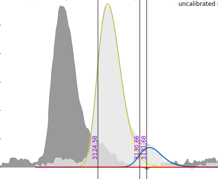
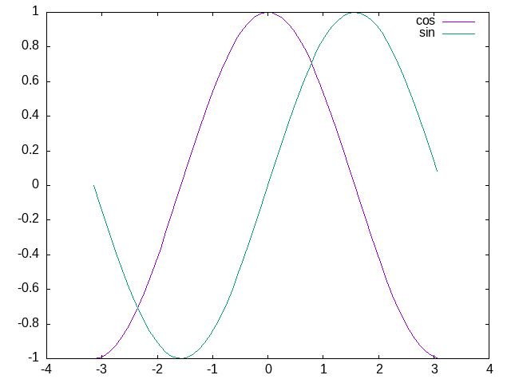

Home
Motivation
Despite the existence of other gnuplot wrappings in Julia:
I developed this extremely small package for my own usage.
I needed a simple solution to:
- navigate/zoom across large 1D signals,
- create and write gnuplot scripts with embedded data.
Here is what I wrote, this is really rudimentary but it does what I needed. By example I use it to plot nonlinear fittings in spectrometry:

This package has no support for Pluto/Jupyter integration, and may never have. Feel free to use it as it is...
Getting started
If you already know gnuplot.info, the good news is that you only have few new stuff to learn: simply use free_form() to pass gnuplot commands.
Here are some basic functionalities with an example
- to perform direct rendering of Gnuplot plots from Julia
- to create and save Gnuplot scripts with embedded data
- to easily export Gnuplot figures
using GnuPlotScripting
# create a gnuplot script
#
gp = GnuPlotScript()
# Fake data
#
X=[-pi:0.1:pi;];
Ys =sin.(X);
Yc =cos.(X);
# embed data into the script
#
id=register_data(gp,hcat(X,Ys,Yc))
# usual gnuplot command
#
free_form(gp,"replot '$id' u 1:3 w l t 'cos'")
free_form(gp,"replot '$id' u 1:2 w l t 'sin'")
# png export of the fig
#
export_png("fig.png",gp)
# write gnuplot script
#
write_script("gnuplot_script.gp",gp)That's it!
After running the previous code you will get a nearly immediate plot of your figure, a fig.png image file

and a gnuplot script gnuplot_script.gp with embedded data you can rerun when you want.
Content
New things you have to know are summarized below.
The API is defined below:
Extra references
Some gnuplot extra references:
- GnuPlot official page
- GnuPlot in Action a very well written book
- www.gnuplotting.org a lot of great examples
- GnuPlot not so Frequently Asked Questions
- Wikipedia free encyclopedia...